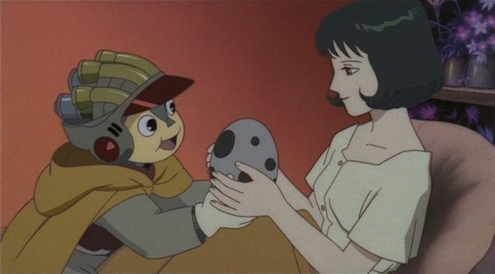

A Japanese anime film was released in 2002 called "A Tree of Palme." Have you heard of it? Probably not. It's a shame too, because it is a surprisingly well-produced film that you would be happy to have watched, and it may even teach you a thing or two. Billed as a unique retelling of the classic fairy tale of "Pinocchio," this film follows a puppet named Palme. After his master is killed for trying to protect him, he wanders to the land that he was told to go to by the mysterious woman who gave him his heart and allowed him to live. He meets other children along the way with their own problems, and eventually a band of these kids go together on this journey, where Palme hopes to become human, and not just a wooden puppet. There's actually a lot that I'm leaving out here. This is a sci-fi, surreal fantasy movie that loosely takes bits from the original fairy tale to make something unique. The world has different sub-levels, where some reside above and some below, and characters refer to these places a number of times. Different tribes of people coexist with each other and fight for survival. We see Palme's history told to us through exposition and flashbacks near the beginning of the film. Several characters are shown with their own complex problems and feelings. We see child slavery, parental abuse and neglect, and madness. Not to mention the strange looking islands, plants and animals that fill the screen. This world is very alien, and while it is very well-realized, I can't help but think it's a little too much. Many people will find that there is too much information in this story. While it might not seem accessible at first, it actually does a splendid job in its story. Poor Palme evolves throughout the journey, from barely being able to talk, to being kind and honest, to being ruthless for his desire to get what he wants. He learns the true value of being alive, and not always the easy way. The perils everyone else faces feels real and saddening. It makes for a powerful feeling in an entertaining package that I haven't seen since the anime film "Metropolis" (coincidently, that only came out a year prior, this period was a special time for anime films as a whole). While not quite as refined, the story still succeeds more than it fails.  The production values are especially noteworthy here. The visuals might seem somewhat outdated for being not as sharp as more recent anime productions, but the style reminded me a lot of classic Disney animated films from decades ago, due to the eyes being wider than usual, so it has more of a classic look to it. The animation is also solid, while being particularly impressive during a few certain scenes. The music also feels like background music you would find in a Disney film, and the English dub is satisfactory. Overall, I don't think I've seen another Japanese anime that was closer to matching Disney's American style. Keep in mind that there is still plenty of violence and blood, and a tiny bit of sexual content, all of which makes it a little too disturbing to recommend to young kids. Somehow, this film got lost in the cracks of anime culture. Even if you had watched it, there's something about it that makes it easy to forget. It's a shame too, because few original anime films come this close to the greatness of Western animation. Had the story been tighter and the film shorter, it could have been incredible. But as it is, it is very much worth watching.
- "Ani" More reviews can be found at : https://2danicritic.github.io/ Previous review: review_A_Thousand_and_One_Nights Next review: review_ACCA_-_13-Territory_Inspection_Dept